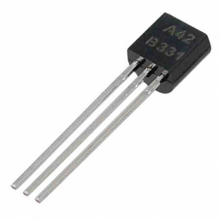
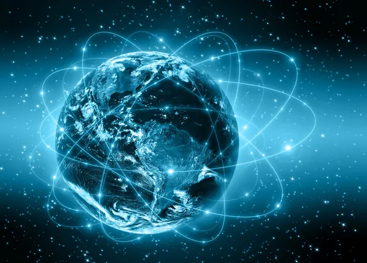
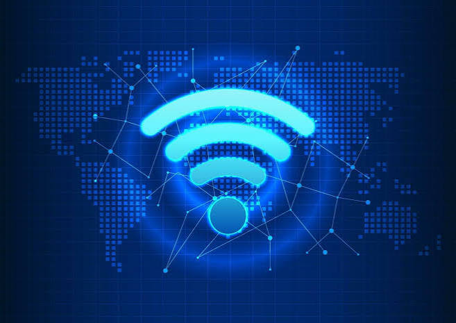
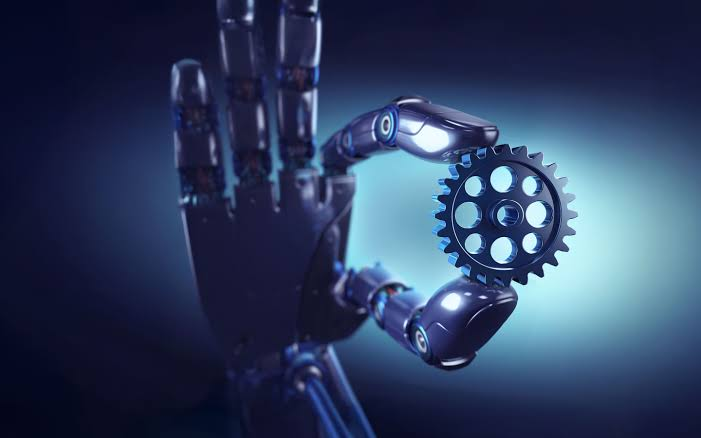
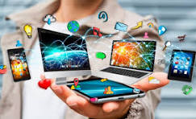
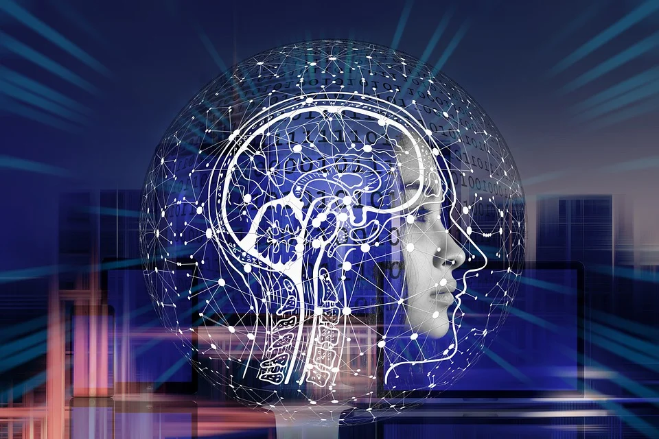
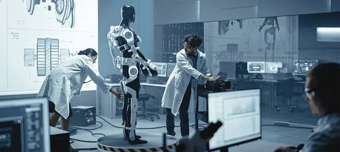

El siglo XXI es el periodo actual y se caracteriza
por los rápidos cambios en la tecnología, la comunicación,
la economía, la política y la ciencia.
Durante este periodo han tenido gran importancia
Internet, las redes sociales, los teléfonos inteligentes,
la inteligencia artificial, la biotecnología,
las energías renovables y la robótica.
Antecedentes: el siglo XX
Antes de llegar al siglo XXI ocurrieron importantes
acontecimientos durante el siglo XX que cambiaron
la sociedad y permitieron muchos de los avances
actuales.
Primera Guerra Mundial
La Gran Depresión
Segunda Guerra Mundial
Llegada del hombre a la Luna
Globalización
Derecho Humanitario Internacional
Grandes aportes del siglo XX
Durante el siglo XX se desarrollaron inventos y
descubrimientos que tuvieron una gran influencia
en el mundo actual.
El avión
Revolucionó el transporte y permitió conectar
lugares de una manera mucho más rápida.

El transistor
Desarrollado en 1947, permitió crear
dispositivos electrónicos más pequeños
y eficientes.
La penicilina
Descubierta por Alexander Fleming en 1928,
fue fundamental para el desarrollo de los
antibióticos.
El ADN
El descubrimiento de su estructura en 1953
fue fundamental para la genética y la medicina.

Internet
Permitió conectar computadores y compartir
información a grandes distancias.
Tecnología espacial
Permitió desarrollar satélites, enviar personas
al espacio y mejorar las comunicaciones.
El siglo XXI
El siglo XXI se caracteriza por una rápida evolución
tecnológica y por la unión de diferentes áreas
de la ciencia.

Internet y redes sociales
Han transformado la manera en que las personas
se comunican y comparten información.
Teléfonos inteligentes
Los smartphones permiten comunicarse, acceder
a información y utilizar diferentes servicios
desde un solo dispositivo.
Inteligencia artificial
La inteligencia artificial ha tenido un gran
crecimiento y se aplica en diferentes áreas.
Biotecnología
La ciencia y la tecnología se han unido para
desarrollar nuevos avances relacionados con
la biología.
Energías renovables
Se han desarrollado tecnologías relacionadas
con fuentes de energía más sostenibles.

Robótica
La robótica y la automatización tienen cada vez
mayor presencia en diferentes actividades.
La sociedad actual
La sociedad actual se caracteriza por su complejidad,
sus rápidos cambios tecnológicos, la globalización,
la diversidad cultural y los problemas ambientales.

Tecnología
La tecnología está presente en diferentes
actividades de la vida cotidiana.
Globalización
Las personas, empresas y países están cada vez
más conectados entre sí.
Economía
La tecnología y la globalización han generado
cambios en las formas de producción y trabajo.
Medio ambiente
El cambio climático y otros problemas ambientales
representan importantes desafíos.
Participación ciudadana
Las nuevas tecnologías también han cambiado
las formas de participación y comunicación.
Ámbito laboral
La tecnología está cambiando diferentes formas
de trabajo y las actividades laborales.
Eventos importantes del siglo XXI
2000–2010: expansión de Internet y revolución digital.
2001: ataques del 11 de septiembre.
2008: crisis financiera.
Llegada del iPhone y expansión de los teléfonos inteligentes.
Crecimiento de China como potencia mundial.
Avances en genética.
Acuerdo de París.
Pandemia de COVID-19.
Crecimiento de la inteligencia artificial.
Programa Artemis y exploración espacial.
Grandes científicos del siglo XXI
Durante el siglo XXI diferentes científicos han realizado
importantes contribuciones en áreas como la genética,
la inteligencia artificial, las vacunas, la física,
la química y la biología.
Jennifer Doudna
Participó en el desarrollo de CRISPR-Cas9,
una herramienta de edición genética.
Emmanuelle Charpentier
Participó junto con Jennifer Doudna
en el desarrollo de CRISPR-Cas9.
Demis Hassabis
Es reconocido por su trabajo en inteligencia
artificial y por DeepMind.
Katalin Karikó
Realizó importantes investigaciones relacionadas
con la tecnología del ARN mensajero.
Drew Weissman
Sus investigaciones sobre el ARN mensajero
fueron importantes para el desarrollo de vacunas.
John Martinis
Ha trabajado en investigaciones relacionadas
con fenómenos cuánticos en circuitos eléctricos.
Omar Yaghi
Es reconocido por su trabajo con estructuras
metal-orgánicas conocidas como MOF.
David Baker
Ha trabajado en el diseño computacional
de proteínas.
El futuro
Los avances actuales permiten imaginar nuevas
posibilidades para los próximos años.

Inteligencia artificial
La IA continuará teniendo un papel importante
en diferentes actividades.
Medicina personalizada
La medicina podría avanzar hacia tratamientos
cada vez más adaptados a cada persona.
Computadores cuánticos
La computación cuántica representa una de las
áreas de investigación tecnológica del futuro.
Energía sostenible
Se buscarán nuevas formas de producir y utilizar
energía de manera más sostenible.

Robótica
Los robots y los sistemas automatizados podrían
tener una presencia cada vez mayor.
Conclusión
El siglo XXI se caracteriza por rápidos cambios
tecnológicos y científicos que han transformado
la sociedad.
Internet, los teléfonos inteligentes, la inteligencia
artificial, la biotecnología y las energías renovables
son algunos ejemplos de estos cambios.
Sin embargo, también existen desafíos relacionados
con la privacidad, la desigualdad y el medio ambiente.
Por eso, el desarrollo tecnológico debe buscar un
futuro seguro, sostenible y accesible.
"El progreso se logra mediante la mejora de las
personas, no por la mejora de las máquinas."


.jpeg)